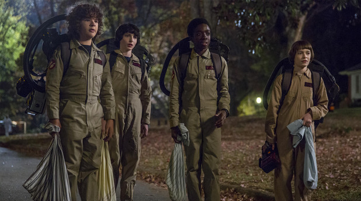
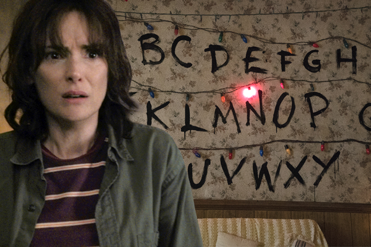

За сериала
„Странни неща" е американски научно – фантастичен сериал създаден, написан, режисиран и ко-продуциран от братята Дафър. Някой от основните идеи са базирани на продукции като „Извънземното", „Полтъргайст" и върху книги на Стивън Кинг.
Сюжет
 Действието в сериала се развива в измисленият град Хокинс, щата Луизиана през далечната 1983 г. Наблизо е разположена националната лаборатория на Хокинс, в която се предполага, че се извършват изследвания за американското правителство, а всъщност вътре се провеждат експерименти свързани със свръхестественото и непознатото, някои от които се правят върху хора.
 На 6 ноември 1983 г. по „необясним" начин изчезва 12-годишният Уил Байерс. Майката на момченцето се обръща към началника на полицията с молба за помощ в търсенето на сина й. Приятелите на Уил – Майк, Дъстин и Лукас също правят всичко по силите си да го намерят. В едно от търсенията си те откриват в гората момиче с необикновени способности. Единадесет разказва на момчетата какво знае за изчезването на техния приятел Уил и че всъщност, той е отвлечен от чудовище.
Това, което прави сериала интересен обаче не е само сюжетът му. Начинът по който екипът на продукцията представя чувствата и мислите на героите, кара зрителят да е съпричастен. Освен добрият сценарий, за успехът на сериала оказва влияние и актьорският състав. Майката на изчезналото момче е любимката на Холивуд Уинона Райдър. Но в този случай светлината на прожекторите попада върху колегите й – Фин Волфхард, Кейлъб МакЛафлин, и Гейтън Матерацо, деца които играят ролите си по-добре отколкото възрастен би успял.